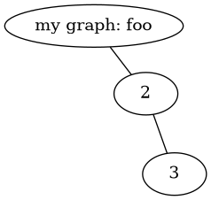
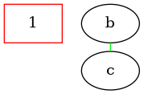
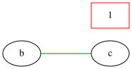

Tutorial#
The API is very similar to that of NetworkX. Much of the NetworkX tutorial is applicable to PyGraphviz.
Start-up#
Import PyGraphviz with
import pygraphviz as pgv
PyGraphviz wraps graphviz providing a Python interface to graphviz’s functionality. Information about the version of graphviz that is wrapped by pygraphviz can be found with
pgv.__graphviz_version__
'2.43.0'
Graphs#
To make an empty pygraphviz graph use the AGraph class:
G = pgv.AGraph()
print(G)
strict graph "" {
}
You can use the strict and directed keywords to control what type of graph you want. The default is to create a strict graph (no parallel edges or self-loops). To create a digraph with possible parallel edges and self-loops use
G = pgv.AGraph(strict=False, directed=True)
print(G)
digraph "" {
}
You may specify a dot format file to be read on initialization:
G = pgv.AGraph("Petersen.dot")
Other options for initializing a graph are using a string,
G = pgv.AGraph("graph {1 -- 2;}")
print(G)
graph {
1 -- 2;
}
using a dict of dicts,
d = {"1": {"2": None}, "2": {"1": None, "3": None}, "3": {"2": None}}
A = pgv.AGraph(d)
print(A)
strict graph "" {
1 -- 2;
2 -- 3;
}
or using a SWIG pointer to the AGraph datastructure,
h = A.handle
C = pgv.AGraph(h)
Nodes, and edges#
Nodes and edges can be added one at a time
G = pgv.AGraph()
G.add_node("a") # adds node 'a'
G.add_edge("b", "c") # adds edge 'b'-'c' (and also nodes 'b', 'c')
print(G)
strict graph "" {
a;
b -- c;
}
or from lists or containers.
nodelist = ["f", "g", "h"]
G.add_nodes_from(nodelist)
print(G)
strict graph "" {
a;
b -- c;
f;
g;
h;
}
If the node is not a string an attempt will be made to convert it to a string
G.add_node(1) # adds node '1'
G.nodes()
['a', 'b', 'c', 'f', 'g', 'h', '1']
Attributes#
To set the default attributes for graphs, nodes, and edges use the graph_attr, node_attr, and edge_attr dictionaries
G = pgv.AGraph()
G.graph_attr["label"] = "Name of graph"
G.node_attr["shape"] = "circle"
G.edge_attr["color"] = "red"
G.add_edge("A", "B")
print(G)
strict graph "" {
graph [label="Name of graph"];
node [shape=circle];
edge [color=red];
A -- B;
}
Graph attributes can be set when initializing the graph
G = pgv.AGraph(ranksep="0.1")
Attributes can be added when adding nodes or edges,
G.add_node(1, color="red")
G.add_edge("b", "c", color="blue")
print(G)
strict graph "" {
graph [ranksep=0.1];
1 [color=red];
b -- c [color=blue];
}
or through the node or edge attr dictionaries,
n = G.get_node(1)
n.attr["shape"] = "box"
e = G.get_edge("b", "c")
e.attr["color"] = "green"
print(G)
strict graph "" {
graph [ranksep=0.1];
1 [color=red,
shape=box];
b -- c [color=green];
}
Substitution Characters#
The DOT language defines several special characters that substitute other values
during drawing.
These characters typically take the form of \? where ? is a capital letter.
For example, the special character \G, if used in a node or edge label,
will be replaced with the graph name during drawing:
A = pgv.AGraph(name="foo")
A.add_node(1, label=r"my graph: \G")
A.add_edges_from([(1, 2), (2, 3)])
print(A)
strict graph foo {
node [label="\N"];
1 [label="my graph: \G"];
1 -- 2;
2 -- 3;
}
Special characters have no effect during layout:
A.layout()
print(A)
strict graph foo {
graph [bb="0,0,170.52,161.48"];
node [label="\N"];
1 [height=0.5,
label="my graph: \G",
pos="75.393,143.48",
width=2.0943];
2 [height=0.5,
pos="119.41,86.155",
width=0.75];
1 -- 2 [pos="89.08,125.65 94.835,118.16 101.48,109.51 107.08,102.22"];
3 [height=0.5,
pos="143.52,18",
width=0.75];
2 -- 3 [pos="125.62,68.603 129.19,58.506 133.67,45.855 137.25,35.729"];
}
Character substitution occurs during figure drawing:
A.draw("foo.png")

Character substitution can be disabled by escaping the special characters, e.g.
\\G.
See the DOT language specification (pdf link) for further details.
Layout and Drawing#
Pygraphviz provides several methods for layout and drawing of graphs.
To store and print the graph in dot format as a Python string use
s = G.string()
print(s)
strict graph "" {
graph [ranksep=0.1];
1 [color=red,
shape=box];
b -- c [color=green];
}
To write to a file use
# Test round-tripping graph data to/from file
G.write("file.dot")
with open("file.dot") as fh:
H = pgv.AGraph(fh.read())
H.string() == s
False
To add positions to the nodes with a Graphviz layout algorithm
G.layout() # default to neato
print(G)
strict graph "" {
graph [bb="0,0,150,92",
ranksep=0.1
];
node [label="\N"];
1 [color=red,
height=0.5,
pos="123,74",
shape=box,
width=0.75];
b [height=0.5,
pos="27,28.639",
width=0.75];
c [height=0.5,
pos="98.21,18",
width=0.75];
b -- c [color=green,
pos="53.516,24.677 59.368,23.803 65.572,22.876 71.434,22"];
}
G.layout(prog="dot") # use dot
print(G)
strict graph "" {
graph [bb="0,0,126,80",
ranksep=0.1
];
node [label="\N"];
1 [color=red,
height=0.5,
pos="27,62",
shape=box,
width=0.75];
b [height=0.5,
pos="99,62",
width=0.75];
c [height=0.5,
pos="99,18",
width=0.75];
b -- c [color=green,
pos="99,43.917 99,41.373 99,38.75 99,36.204"];
}
To render the graph to an image
G.draw("file.png") # write previously positioned graph to PNG file

# Use `circo` layout to position, write to PostScript file for e.g. embedding
# in a LaTeX document
G.draw("file.ps", prog="circo")
# Or render directly to an image format
G.draw("file.svg", prog="circo")
